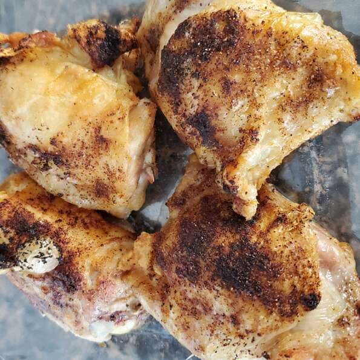

Air Fryer Chicken Thighs
An air fryer recipe chicken thigh recipe taken from the following: https://www.allrecipes.com/recipe/272858/air-fryer-chicken-thighs/
Ingredients
- 4 skin-on, boneless chicken thighs
- 2 teaspoons extra-virgin olive oil
- 1 teaspoon smoked paprika
- 3/4 teaspoon garlic powder
- 1/2 teaspoon salt
- 1/2 teaspoon ground black pepper
Directions
- Pat chicken thighs dry with a paper towel and brush the skin-side of each piece with olive oil. Place chicken thighs, skin-side down, in a single layer on a plate.
- Combine smoked paprika, garlic powder, salt, and pepper in a bowl and sprinkle half the seasoning mixture evenly over the 4 chicken thighs. Turn thighs over and evenly sprinkle remaining seasoning mixture on top. Place chicken thighs in the air fryer basket in a single layer, skin-side up.
- Fry in the preheated air fryer until chicken is brown and juices run clear, about 18 minutes. An instant-read thermometer inserted into the center should read at least 165 degrees F (74 degrees C).